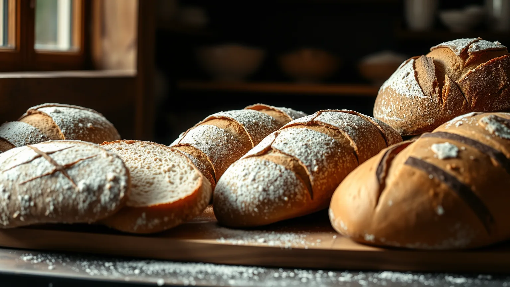
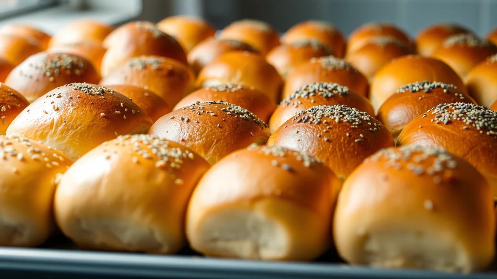
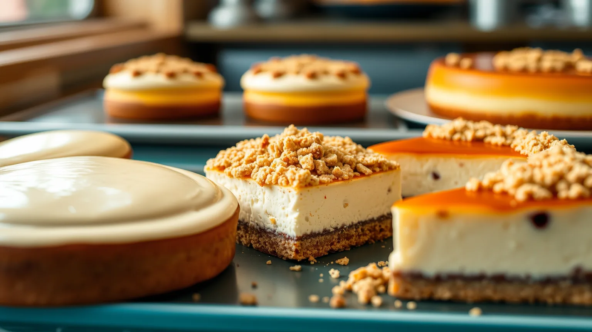
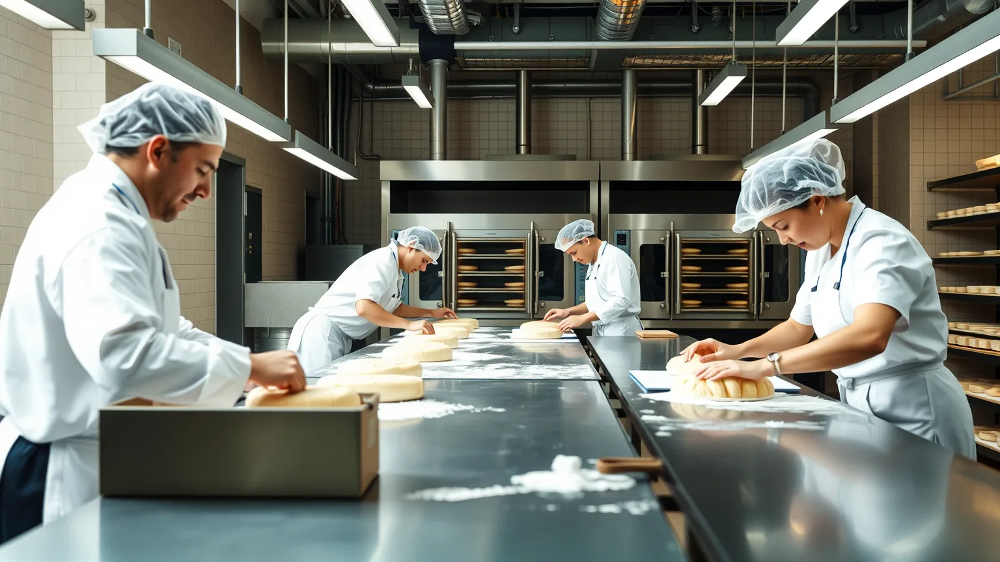
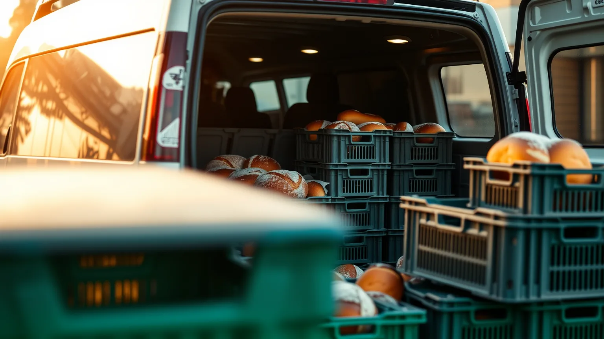

Rodzinne receptury z Bobowej i nowoczesny zakład w Wojniczu. Wypiekamy pieczywo dla sklepów, sieci i gastronomii w całej Małopolsce.
Każda grupa wyrobów ma na stronie osobną zakładkę ze zdjęciami, składem i alergenami. Klient i kupiec widzą od razu, co jest w ofercie.
Pszenne, żytnie i mieszane, na zakwasie i drożdżach. Klasyka i chleby regionalne.
Zobacz chleby →
Kajzerki, grahamki, bułki z ziarnami i pieczywo na co dzień.
Zobacz bułki →
Drożdżówki, ciasta i wypieki świąteczne według sezonu.
Zobacz słodkie →
Pieczywo do restauracji, hoteli i stołówek, także na indywidualne zamówienie.
Zapytaj o ofertę →Najważniejsza zakładka dla kupców. Krótko i konkretnie: dla kogo pieczemy, jak wygląda współpraca i jak zacząć.

Rodzinna piekarnia i receptury przekazywane z pokolenia na pokolenie.
Kolejne lata, nowi odbiorcy i rosnąca rodzina wyrobów Gala.
Nowoczesna piekarnia o powierzchni 15 000 m², a w niej ten sam smak.
Osobna zakładka z aktualnymi ofertami pracy i prostym formularzem zgłoszeniowym. Kandydat aplikuje z telefonu w minutę.
Telefony do działów, adres zakładu i mapa dojazdu. Wszystko klikalne na telefonie.